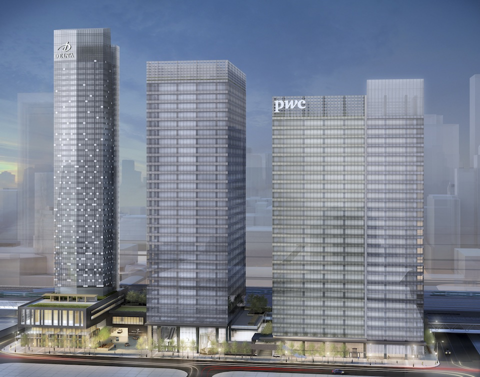
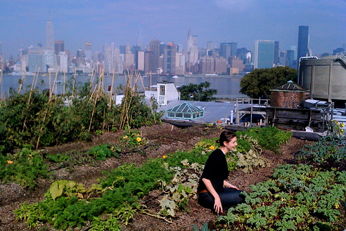
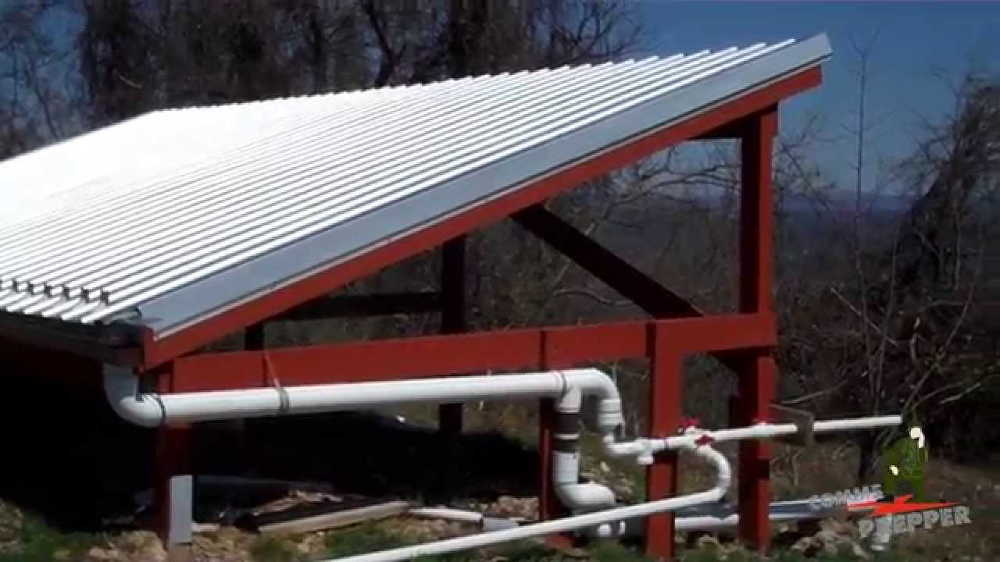
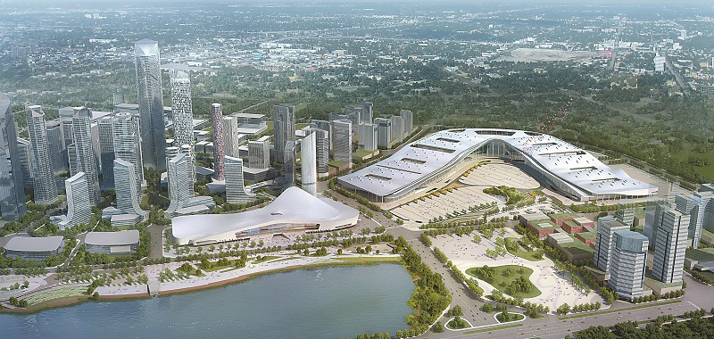

The expression "I have to drive so long to get anywhere" is all too true in suburban Toronto, even in communities with a relatively high denisty. This is because back when Toronto was being planned, everything was zoned off. What that means is some areas were designated as industrial, some as commercial and some as residential These areas were quite large, which meant that residents were close to one another, but not to employment or services. This layout forces people to drive, and it makes transit planning very difficult. One benefit is that it creates tighter knit communities and with a car, the difference wasn't that big of a deal. But since then, times have changed. This layout encourages congestion on routes travelling between the zones. It explains why roads like Lawrence Ave West between Yonge and Allen Rd or Don Mills Rd between Lawrence and Steeles are some of our busiest streets during rush hours but are almost empty during off peak periods. We need to dismantle this model and build integrated communities where the three zones are side by side. This increases walkability and creates more public spaces, not to mention cutting down on commute times. Communities like the South Core are already doing this, and it has led to a sharp uptick in transit ridership, quality of life, walkability and business sales.
For a long time, the relationship between urban and rural communities has been very hostile. Rural communities have often scoffed at the urban elite, and feelings of aliniation and disconnection are everywhere. City folks also look at farm dwellers and mock them, calling them red necks, uneducated and savages. However, modern sustainable cities are bridging the gap between the two. Programs like farmers markets and buy local campaigns such as Foodland Ontario encourage the use of locally grown, fresher and less carbon intensive products. Urban farming has also taken off in recent years, with many cities promoting the use of urban grown produce. It has also evolved into a form of social assistance, with governments giving homeless people jobs in urban farming. They also help to build communities and create shared public spaces.
As the name suggests, sustainable cities need to be...well...sustainable! This means building with the environment in mind. Sustainable cities have features like water usage tracking devices and smart street lights that help to reduce the carbon footprint. Buildings designed to catch rain and stormwater for later use help cut down on water usage and industrial water recycling stops chemicals from getting into the natural environment. In sustainable cities, almost all the buildings need to be LEED certified at a gold or plantium level. LEED is an international system for recognizing buildings that are built using sustainable materials and have a lower carbon footprint. At the same time, sustainable cities recognize that climate change is inevitable, and they're built to adapt to it. They have extensive stormwater filtration systems and have smart sewers which can control the flow of water to prevent flooding. Critical infrastructure is always built far away from natural hazard points and is constantly monitored and protected. Sustainable cities use natural methods to mitigate the effects of climate disasters, for example, planting mangroves to reduce flooding or eliminating grass lawns to reduce water usage during droughts.
We hear about sustainable cities in places like Iceland and Finland all the time, and for good reason. These cities are some of the most walkable and environmentally friendly places in the world. But they're all in super wealthy countries with low income gaps and small populations. Furthermore, they aren't innovative. They don't have new ideas and they definitley aren't resilient. Surprisingly, most true sustainable cities are in developing regions such as China, India, Brazil, South Africa and the Middle East. One such city is the Tianfu New Area in Chengdu, China. It's two times the size of Toronto, and will house a few million people. This new city which is currently under construction embodies everything a sustainable city should be. It's built with it's own metro line which will connect it to other destinations, and driving is discouraged with expressways routing cars away from the city. Commercial, industrial and residential areas are all integrated, with many destinations within walking distance of one another. The buildings will have greenery, stormwater filtration and power usage reduction measures built into them. The city will be sliced in half by a 10.8 km greenery belt which will create a huge swath of parkland while acting as a wildlife corridor for animals. Energy generation will be largley localized, with solar panels and wind turbines integrated into streetlights, buildings and utility poles. Smart sensors that detect water and power usage will help find trouble points and propose ways to cut down on resource usage.
To see the masterplan for the TianFu New Area, visit the Smith and Gill site.
Urban farming is often talked about and is sometimes viewed as millennial nonsense, but it actually has many practical applications.
Return to the top of the page
Return to the home page